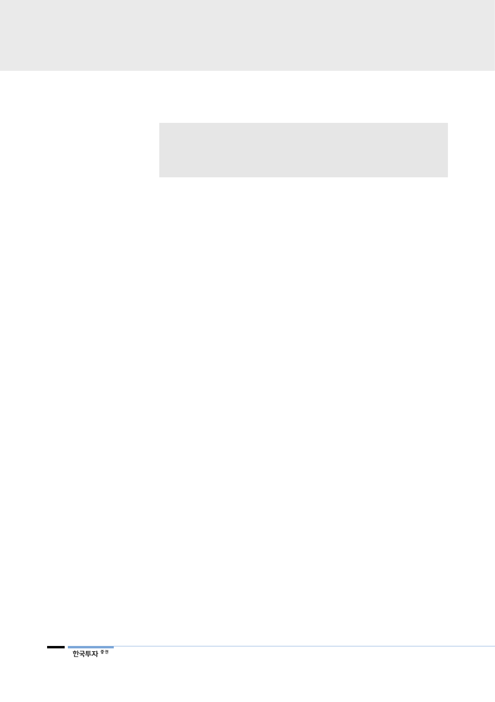

추정치 하회 배경은 NAV
1.4%인 현대일렉트릭의
실적 부진
일회성 제외시 4분기
영업이익은 전년 대비
68.4% 증가 전망
3분기 정기보수 영향 제거,
겨울 최대 성수기 진입으로
정제마진 강세
2019년 retrofit 수주의
본격 매출화 시작
2
리포트 작성 목적
• IMO 2020 규제 시행에 따른 영향 분석
• 저유황유 스프레드 확대로 인한 현대글로벌서비스 수혜 점검
• 현대오일뱅크 IPO 연기로 2018년 배당 기대치 상승
I. 연말 이전 투자포인트 정리
1. 일회성 제외시 4분기 영업이익 68.4% 증가 전망
현대중공업지주는 3분기 영업이익 3,560억원(-31.4% YoY, +4.3% QoQ), 지
배주주 순이익 2,603억원(-67.4% YoY, +133.0% QoQ)을 시현했다. 지난 8월
3분기 현대중공업 지분 5% 매입에 따른 염가매수차익 1,557억원을 배제하면 추
정치를 하회했다. 현대오일뱅크의 3분기 영업이익은 2,400억원(-0.9% YoY,
+23.5% QoQ)으로 추정치 2,280억원을 상회했지만, NAV의 1.4%를 차지하는
현대일렉트릭의 영업손실 765억원이 추정치 하회의 주요 배경이다.
현대중공업지주의 4분기 영업이익은 3,470억원으로 3분기 염가매수차익 1,557
억원을 제외하면 전분기 대비 68.4%의 이익 개선이 예상된다. 지배주주 순이익
은 1,094억원으로 전년 대비 흑자전환을 예상한다. 호실적을 예상하는 이유는 대
부분의 실적을 차지하는 현대오일뱅크의 4분기 영업이익이 3,144억원으로 전분
기 대비 31% 개선이 예상되기 때문이다. 지속적으로 적자를 기록한 현대중공업
도 4분기 공사손실충당금 축소, 고정비 감소가 예상되기에 실적 부담을 덜어줄
것으로 판단한다.
현대오일뱅크는 3분기 정기보수 영향이 제거되고 등경유의 겨울 최대 성수기 진
입에 따라 정제마진 강세를 예상한다. 3분기 정기보수를 통해 기초 정제설비인
상압증류공정(CDU) 및 고도화설비 증설이 완료되었다. 현재 시험가동 및 안정화
진행 중인데 본격적으로 가동될 경우 현대오일뱅크의 등경유 비중은 55%를 초
과할 것으로 예상되어, 현재 국내 정유사 중 가장 높은 고도화 비율을 달성하게
된다. 또한 신규 아스팔트 추출공정 설비도 3분기 중 완료됨에 따라 초중질유 원
유 투입 비중은 더욱 확대될 전망이다. 따라서 IMO의 고유황 연료유 규제가 실
시되는 2020년에는 최적화된 제품 믹스뿐만 아니라 원재료 구매 비용 또한 절감
될 것으로 예상된다.
현대글로벌서비스는 3분기 저마진 사업인 벙커링사업 매출 확대로 3분기 영업이
익률이 15.6%로 부진했지만, 올해 4억달러 이상 수주한 retrofit 사업이 2019년
본격 매출로 반영되기에 2019년 큰 폭 실적 개선이 예상된다. 올해 글로벌서비
스의 매출은 3,883억원(+63.1% YoY)로 추정된다. 보수적으로 2019년에 기존